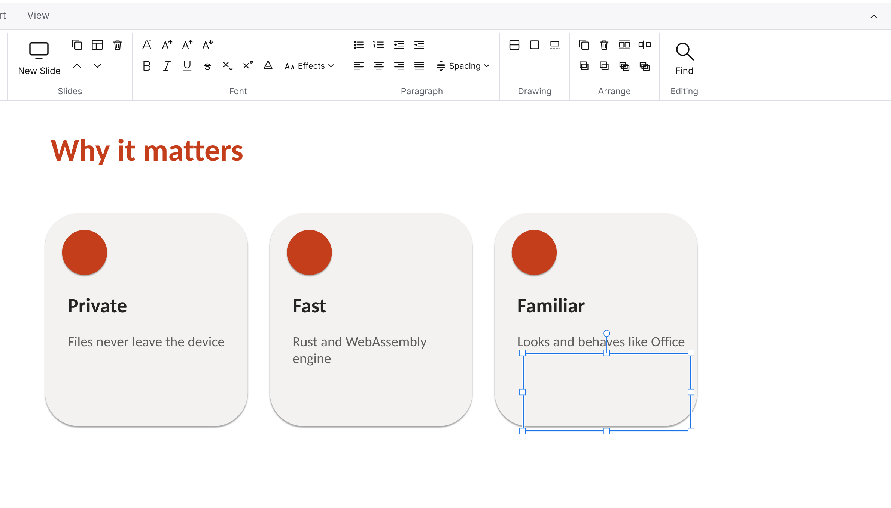
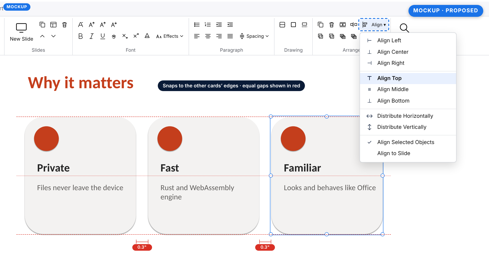
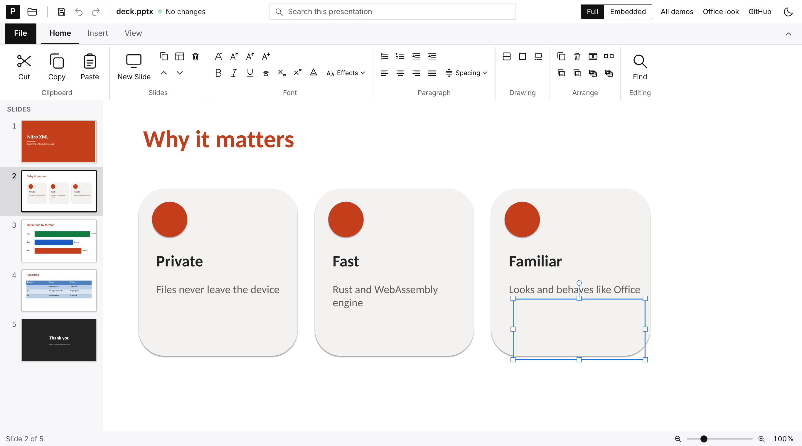
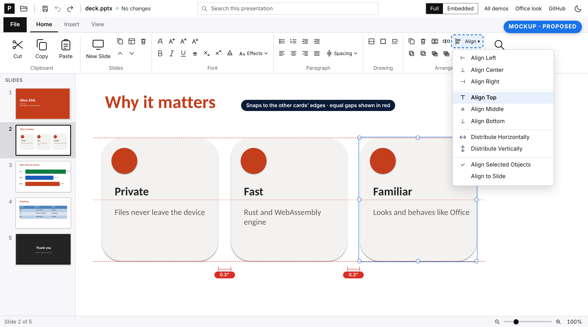

Line shapes up: smart guides while dragging, plus Align and Distribute
Approved 2026-11-24 (👍). Queued for the nightly build behind host-API priority work and #612.
Approve: tap 👍 on the issue · Decline: tap 👎
Close-up of the change




Full screen


Today (slide 2, dragging the third card's text box): no guides appear and nothing snaps, so it is easy to drop a shape a few pixels off. The Arrange group has order and group buttons but no Align or Distribute.


Mockup: while dragging, red dashed smart guides show when the card's top, middle or bottom line up with the others, and equal-gap markers show the spacing matches. A new Align menu in Arrange offers Align Left/Center/Right/Top/Middle/Bottom and Distribute.
Tap an image to open it full size.
Why
Lining things up is the most frequent fiddly task in PowerPoint, and misaligned boxes are what makes a slide look amateur. PowerPoint, Google Slides, OnlyOffice and Collabora Impress all show smart guides while dragging and have Align/Distribute. Nitro already has shape drag, resize, group and z-order, so this fills the obvious gap in the Arrange group.
Definition of done
- Home > Arrange has an Align menu: Align Left/Center/Right/Top/Middle/Bottom, Distribute Horizontally/Vertically, Align to Slide / Align Selected Objects; each is one undo step and works on multi-selection.
- Dragging a shape shows dashed smart guides when an edge or centre lines up with another shape or the slide centre, and snaps within ~5 px; Alt disables snapping.
- Equal-gap markers appear when the dragged shape's spacing matches its neighbours'.
- Arrow keys nudge the selection; positions save to a:off and reopen identically in PowerPoint and LibreOffice.
- Playwright tests cover each align/distribute command, snapping on and off, undo and save round-trip; Arrange stays two rows, Font and Paragraph groups at most two rows; bundle-budget and all required checks green.
Approve: tap 👍 on the issue · Decline: tap 👎